实际打开可交互原型，走完输入页 → 三情景结果页 → 四状态页 → 桌面/手机，逐字比对已锁定契约与现有实作。
上一版评审点名的 4 条 P0（数据可信度、状态覆盖、硬阈值切换条件、到达区间 + 信心限定）基本全部落地，信息层级清晰。
整条走廊、地点枚举、候选路线与交通方式全部与 corridor/index.ts 和已锁定契约不一致——它做的其实是「另一条走廊」的产品。
三处界面自相矛盾：「服务正常」却发生港铁故障；「港岛线→观塘线」一次转乘不成立；时间基准 07:51 / 07:56 / 08:00 打架。
types/、corridor/、三个 fixture，重跑 golden / smoke，并同步 B / C / D。
这是一份 Figma Make 可交互原型（不是静态画板），已发布成一个真实可访问的站点，因此可以对它做真正的用户流程测试，而不只是看排版。
/api/decision 复现任何一屏。| 上一版评审要求 | 新版设计稿的落地 | 判断 |
|---|---|---|
| P0-1 补「数据可信度」层 | 顶部徽章「演示固定资料 · 08:00 HKT」；底部「资料透明度」列出交通/天气/历史三项，均标 FIXTURE + 时间 | 已解决 |
| P0-2 补不确定/不可用状态 | 结果页自带「加载中 / 不确定 / 不可用 / 错误」四态，各有文案与操作 | 数量已补齐，语义待对齐 |
| P0-3 切换条件独立成块、含硬阈值 | 深色高亮卡片「若 08:10 仍未离开起点，改乘的士直达」 | 已解决 |
| P0-4 到达时间改区间、信心加限定词 | 「预计 08:38–08:47 到达」「已包含 8 分钟可靠性缓冲」「到达信心：高 / 演示估算」 | 已解决 |
| P1-6 情景切换标注「演示」 | 「演示情景 · 固定资料」「固定演示资料，非个人偏好」 | 已解决 |
| P1-7 补「推荐理由」 | 可展开块，含 3 条理由 | 有块，但内容不可追溯 |
| P1-8 信息层级分三层 | 一句话决策 → 信心/数据徽章 → 时间轴/Plan B/切换条件/理由/透明度 | 已解决 |
| P1-11 不只靠颜色表达 | 风险与信心均为「文字 + 图形条」 | 已解决 |
| P2-12 底部固定演示声明 | 页脚「演示版本 / 固定资料 · 估算仅供参考」+ 免责 | 已解决 |
| 维度 | 已锁定契约 / 实作（唯一真相） | 新版 Figma 设计稿 | |
|---|---|---|---|
| 走廊 | 将军澳（坑口）↔ 中环 tko-hang-hau-to-central | 西营盘/中环/湾仔 → 九龙湾/观塘/启德 | ✕ |
| 起点枚举 | 坑口（富宁花园）、坑口站 A 出口 | 西营盘·皇后大道西、中环·国际金融中心、湾仔·会展站 | ✕ |
| 终点枚举 | 中环（交易广场）、中环（国际金融中心二期） | 九龙湾·宏照道、观塘·创纪之城、启德·AIRSIDE | ✕ |
| 候选路线 | R1 港铁主线（将军澳线→港岛线）、R2 过海巴士（东隧）、R3 港铁经鲗鱼涌 | 港铁优先（港岛线→观塘线）、的士直达、巴士 101、过海的士、巴士 101+港铁 | ✕ |
| 交通方式 | mtr | bus | minibus | walk | tram | ferry（无 taxi） | 出现「的士直达」「过海的士」 | ✕ |
| 巴士编号 | README：未使用真实路线编号，需 B 核对官方资料 | 直接写「巴士 101」 | 需 B 核实 |
后果：① 落到代码会立刻触发 400 INVALID_INPUT（未知地点）；② 三个黄金 fixture 的出发时间、主路线、信心、切换条件全部对不上，npm run smoke 与演示互相打脸；③ 「切换情景得到不同建议」的演示脚本在真实数据下不成立。
改法（找 A 拍板）：
方案 A（推荐，成本低）：设计稿改内容、保版式——地点换成坑口 → 中环，路线文案换成 R1/R2/R3，Plan B 用过海巴士、删除的士。
方案 B（成本高）：走契约变更流程，改 API_CONTRACT.md + types/ + corridor/，由 B 换数据、C 重算、D 重跑全部测试，并全组同意。未走完前设计稿不能进实现。
契约的 origin / destination 是严格枚举（各 2 个值），未知值会被 strict schema 拒绝。设计给出起 3 × 终 3 = 9 种组合，且带交换按钮，暗示可任意对调。
改法：收敛为契约的 2 × 2；文案点明「首版只支援一条固定通勤走廊」；去掉交换按钮。
latestDepartAt）只有「建议 08:05 出发」，没有「最迟 08:xx 前离开」。这正是本项目区别于地图的核心输出之一，上一版评审的 P0-4 也未补齐。
改法：一句话决策卡并列显示，例如 建议 08:05 出发 · 最迟 08:15 前离开起点。
a) 顶部状态与情景冲突。页头固定「● 服务正常」，但「交通中断」情景正文写「金钟站信号设备故障」；「不可用」「错误」状态下页头仍写「服务正常」。
→ 页头状态应由 primaryPlan.status（labels.ts: STATUS_LABELS）驱动。
b)「港岛线 → 观塘线」单次转乘不成立。时间轴写 08:12 港岛线 → 08:24 转乘观塘线 → 08:42 到达。但两条线没有任何交会站，现实中至少需 2 次转乘（经荃湾线，或经将军澳线到油塘）。
→ 换成契约里真实存在的转乘结构（将军澳线→北角→港岛线，或经鲗鱼涌）。
c) 时间基准打架。页头「演示固定资料 · 08:00 HKT」，中断情景却写「信息来源 07:51」「建议 现在 · 07:56 出发」——若快照是 08:00，则 07:56 的「现在」是过去时间。
→ 所有时间锚定 dataUpdatedAt；契约规定决策层永不使用「现在时间」计算。
契约：status = uncertain 表示有可行路线但信心为 low 或无 Plan B，仍要输出 departAt / etaRange / primaryRoute / reasons（例如 disruption 情景本身就是 uncertain，仍给主路线 R2 与 Plan B R3）。
设计的「不确定」预览却把建议整块换掉，只留：
资料状态｜目前资料存在较大波动｜部分实时资料延迟，建议预留至少 20 分钟缓冲时间｜重新获取建议
这是把「决策不确定」与「资料延迟」混为一谈。改法：① uncertain 照常显示完整建议 + 顶部黄色警示条；② 「资料延迟」属于 notices，应作为叠加提示条，名字改为「资料更新中 / 资料延迟」。
契约 §2.4：unavailable → 使用者应「依 reasons 调整限制条件、改时间或改用其他方式」；DecisionAction.hold = 留在安全处持续观察。设计只给一个「重新获取建议」按钮，没有「修改条件重查」、没有 hold、没有展示 reasons / excludedRoutes。
改法：至少三个出口——① 修改行程条件（主按钮）② 查看原因（列出被排除路线与原因）③ 留在安全处观察。
FIXTURElabels.ts 规定中文标签为唯一来源（live 實時資料 / cached 快取資料 / fixture 演示固定資料）。设计写「FIXTURE · 08:00」，页头又写「演示固定资料」——同一概念两种写法。改法：统一用 DATA_QUALITY_LABELS 中文标签。
契约中 maxExtraCost 为 0–500 整数，0 是有效值；演示基线是 10。设计只有 HK$40 / 80 / 150，既选不出基线 10，也暗示「最少要花 40」。改法：补「不额外付费（HK$0）」与「HK$10（演示基线）」或改为输入框。
转乘次数「不转乘/最多1次/最多2次」已覆盖 0 且在 0–5 内，OK。
契约 arriveBy 是 YYYY-MM-DDTHH:mm，服务日期影响结果，回应还带 serviceDate。设计只显示 09:00。现有实作已回显「目标到达时间 / 服务日 / 前往地点」（generatedFor），设计应保留。
理由「波动更小 / 缓冲充足 / 可及时切换」没有来源标注；且「过去相似时段的行程时间较稳定」与小字「基于相似行程表现」已构成统计依据（statistics）——而 DECISION_ENGINE.md 明确：没有历史校准前不得出现统计依据、不得声称概率。改法：每条理由挂来源（规则/资料）；删掉统计暗示，改「演示估算」。
契约 additive 有 candidates 与 excludedRoutes；disruption 情景的演示价值正是「R1 因服务中断被排除」，现有实作也有该折叠块。设计只给主路线 + 1 条 Plan B。改法：加可折叠的「其他候选路线（含被排除原因）」。
现有实作在结果页提供「查看原始 JSON」（README §6），便于向评委证明「结构化、确定性、可复现」。改法：保留，或改为「查看决策依据」。
labels.ts 漂移设计用 按计划出发 / 提前出发 / 立即出发；契约 DECISION_ACTION_LABELS 是 立即出發 / 按建議時間出發 / 先核實再出發 / 留在安全處持續觀察——设计把 depart_at 写成「按计划出发」，且缺 wait / hold。「提前出发」也没有基准。改法：与 labels.ts 对齐，并给基准（如「比最迟出发早 10 分鐘」）。
页头/页脚「出行可靠性决策助手」、hero「AI 出行可靠性决策助手」、Figma 文件名与项目名「韧性出行助手」。另外 hero 的「AI」要小心——项目硬规则是「大模型不参与事实判断」，宣传语不能让人以为路线是 AI 算的。
结果页底部 4 个按钮（加载中/不确定/不可用/错误）对普通用户不可见为好。改法：放进「演示控制」折叠区、或只在 ?demo=1 下显示、或用快捷键触发。
RouteStatus + riskNotes。live 情景：契约 Scenario 有 4 个值，切换器只给 3 个。constraints 在契约中为必填（✓），设计标注「选填」——若用默认值请写明。点击任意图片可查看原图。全部截图取自 blog-drawn-56594600.figma.site（社区文件元资料中的 published_site_url），并与逐字文案（同名 .txt）一并存于 screens/。
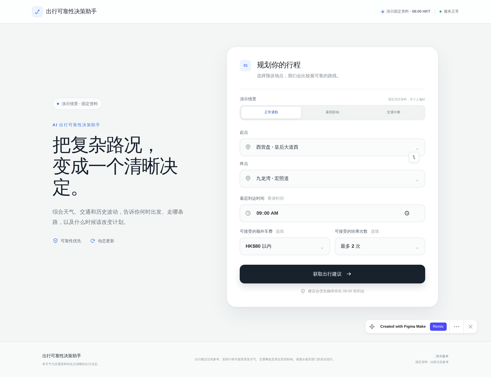
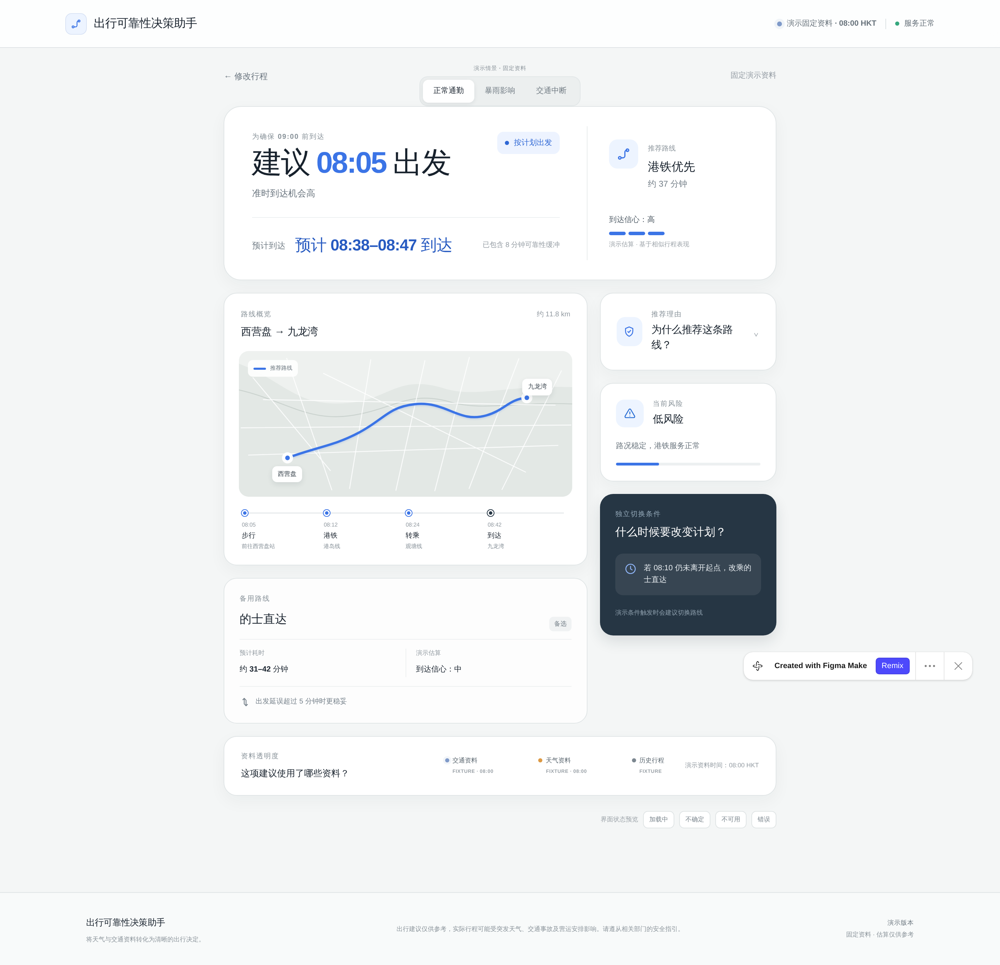
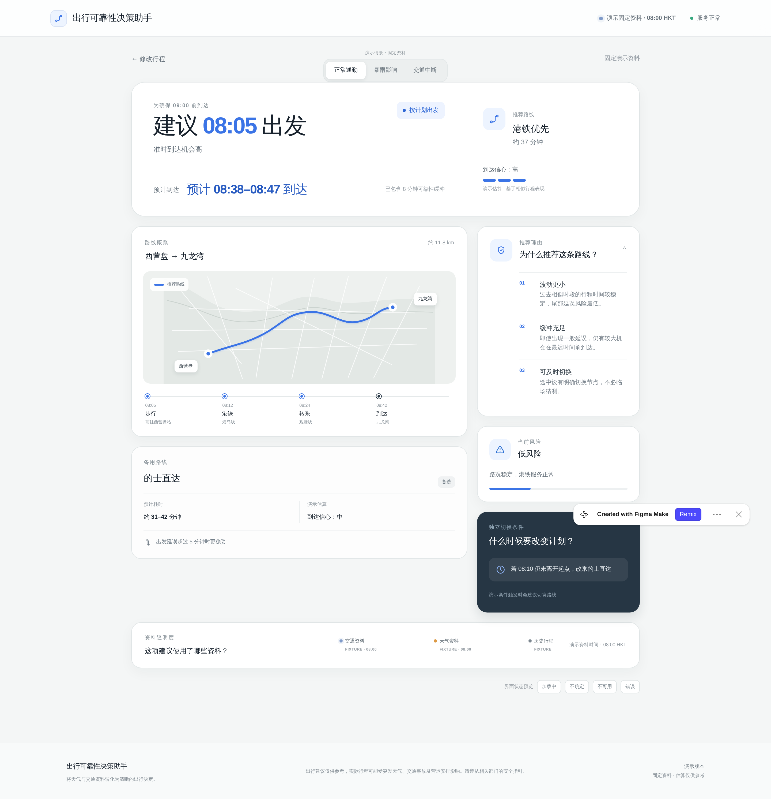
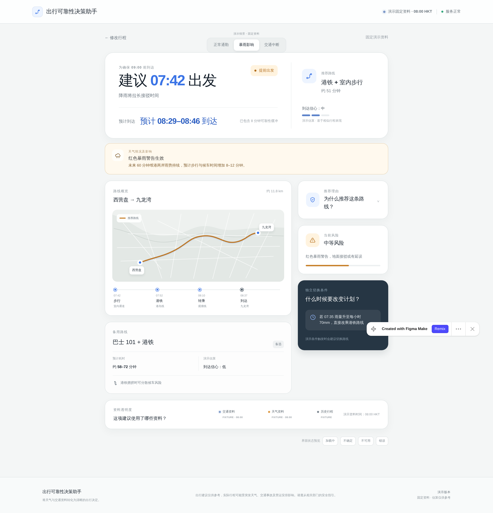
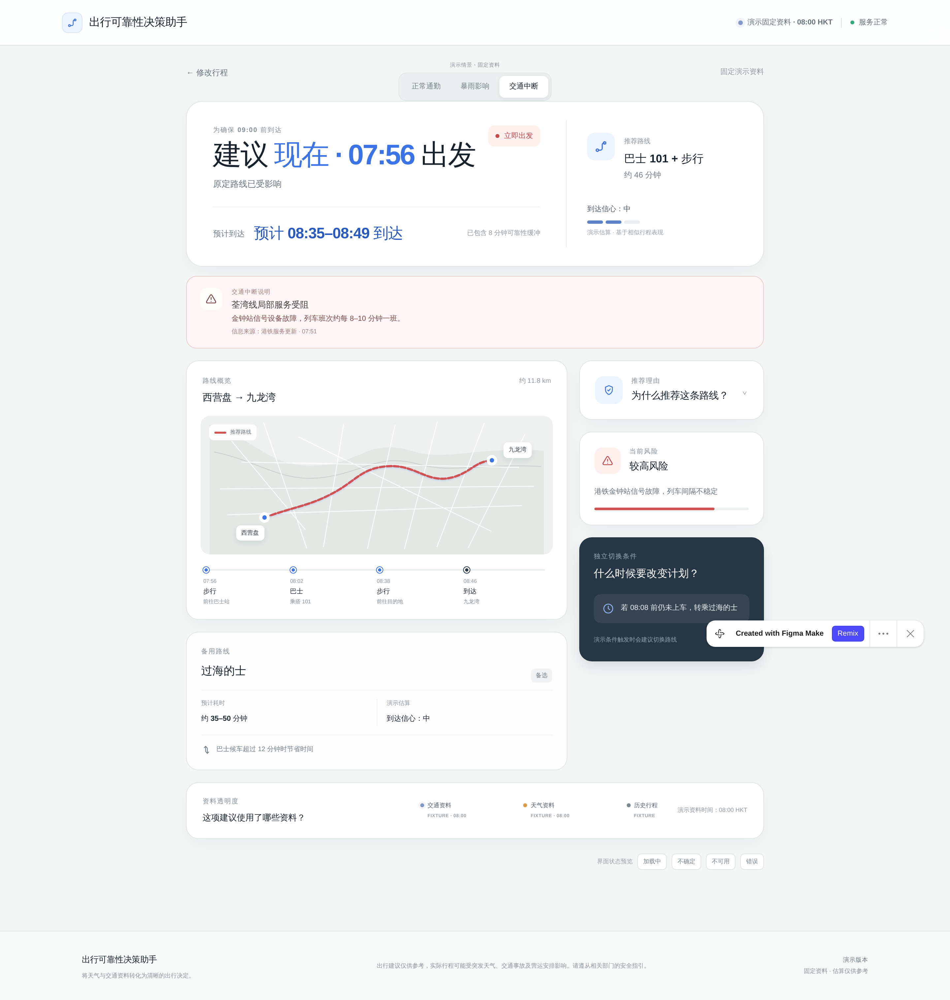
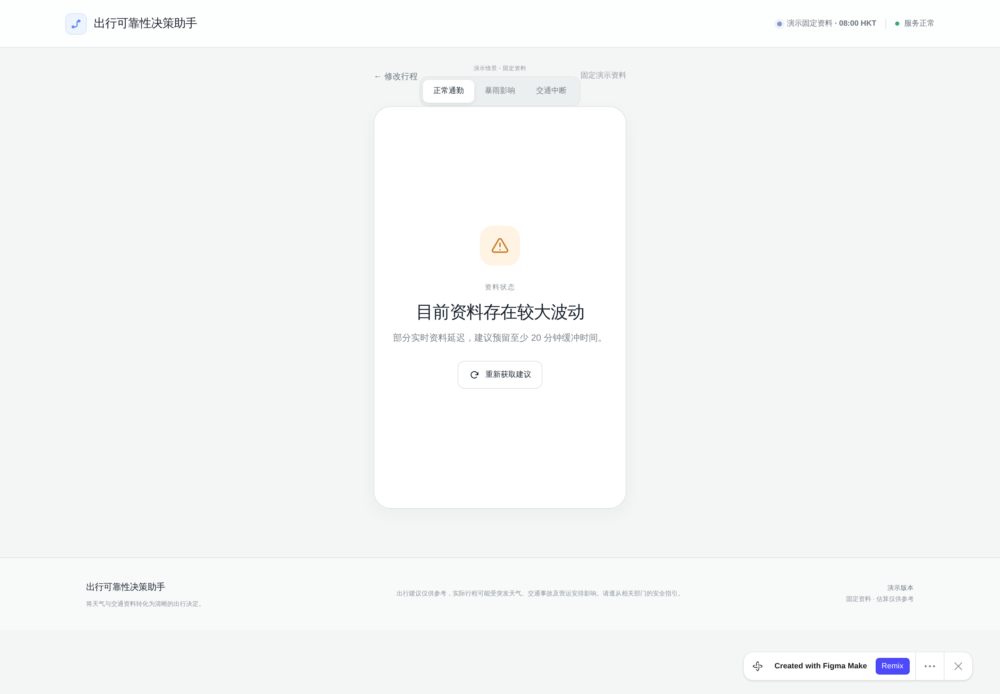
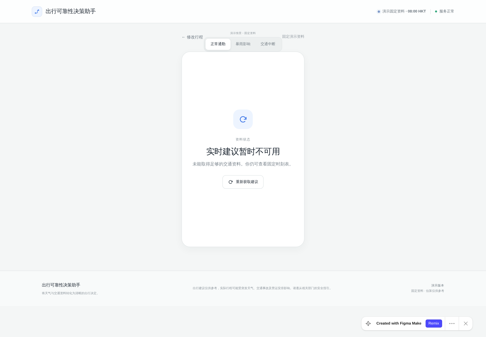
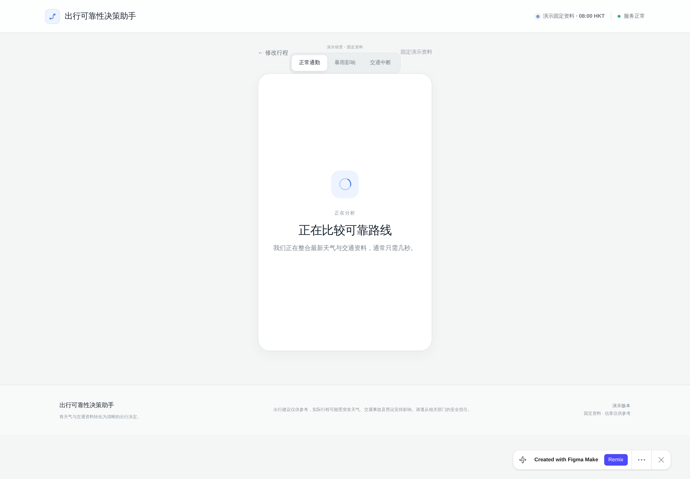
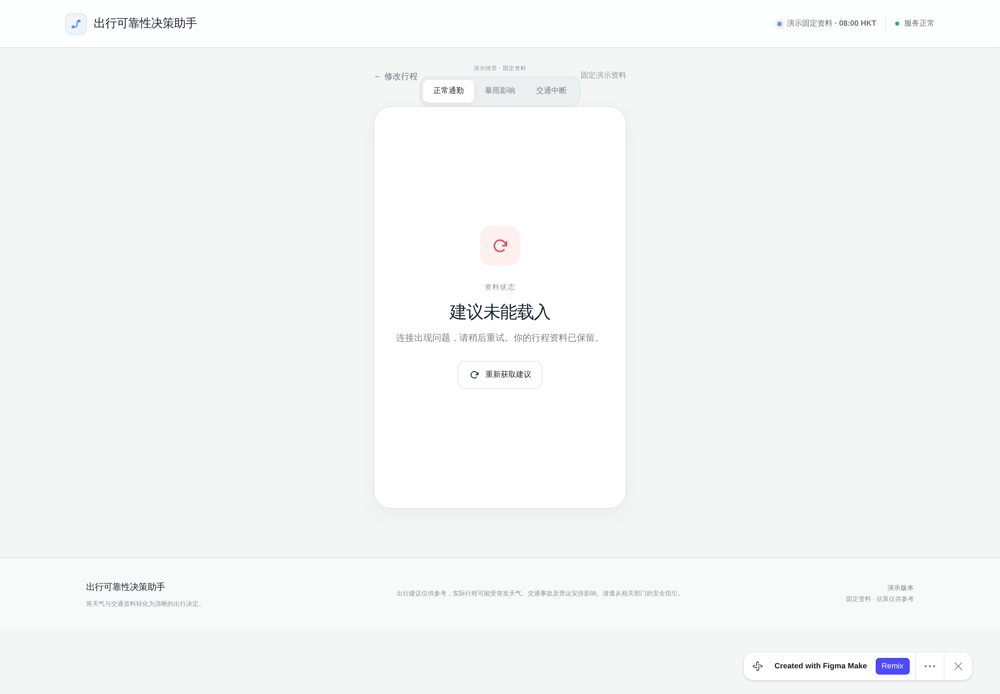
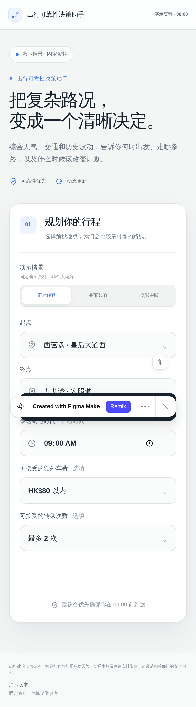
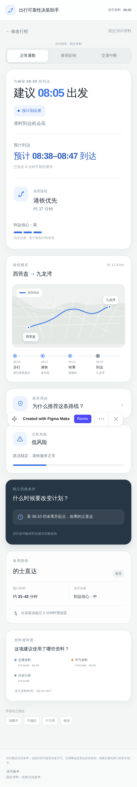
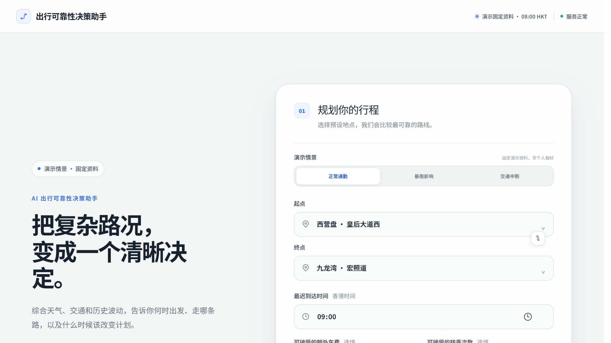
先决定一件事（找 A 拍板）
若改设计（方案 A）
latestDepartAtprimaryPlan.status 驱动，去掉写死的「服务正常」notices 并改名FIXTUREHK$0 与演示基线 HK$10serviceDatelabels.ts 对齐，并给「提前/立即」一个基准